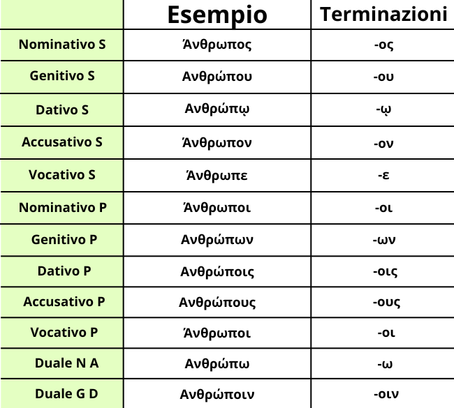

La seconda declinazione ha come vocale tematica la ο e comprende soprattutto nomi maschili e alcuni femminili. È una declinazione molto frequente e fondamentale per la formazione degli aggettivi della prima classe.
Le desinenzeda Nominativo a Vocativo, da Singolare a Duale sono: -ος, -ου, -ῳ, -ον, -ε, -ω, -οι, -ων, -οις, -ους, -οι, -οιν
Ci sono cose importanti da ricordare:
1). Il dativo singolare -ῳ è una forma tipica e va memorizzata bene.
2). Il vocativo singolare -ε è molto caratteristico.
3). Il genitivo plurale -ων non è perispomeno.
4). L'accusativo plurale -ους è molto frequente nei testi.
Molti sostantivi maschili comuni appartengono a questa declinazione. Impararla bene significa riconoscere rapidamente il soggetto e l'oggetto nelle frasi.